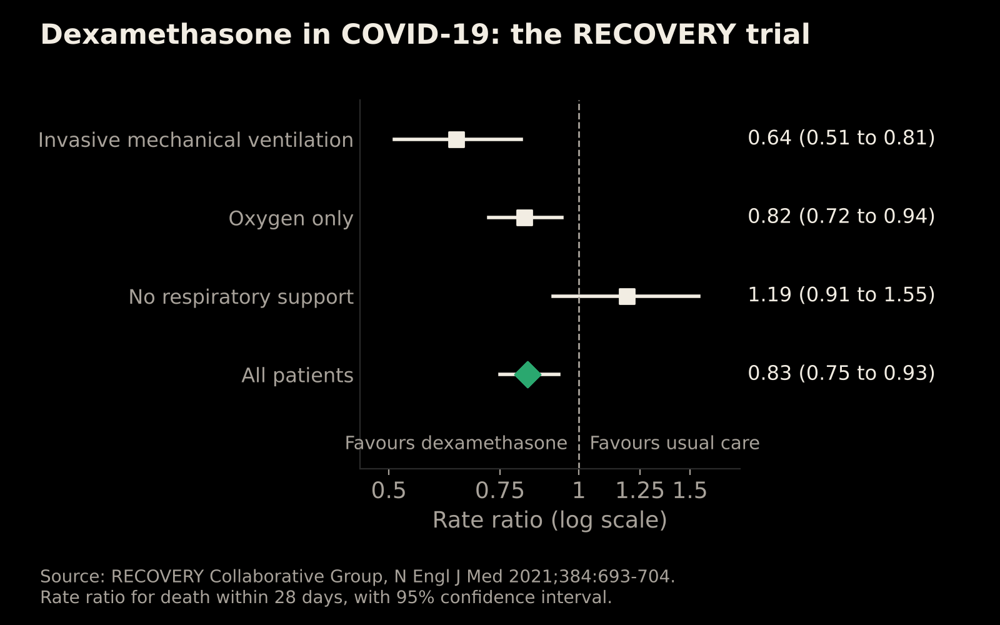
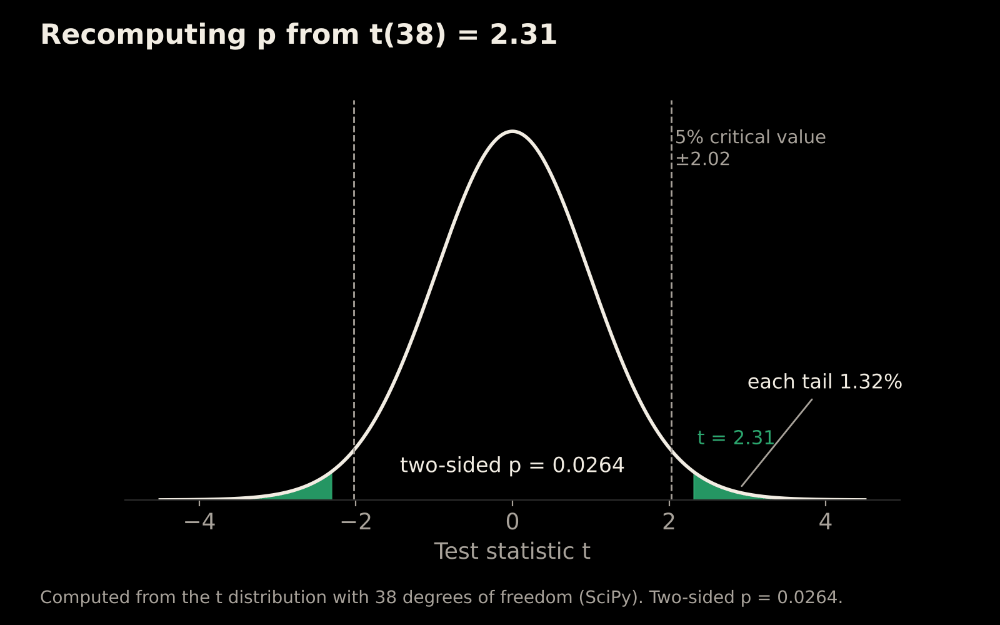
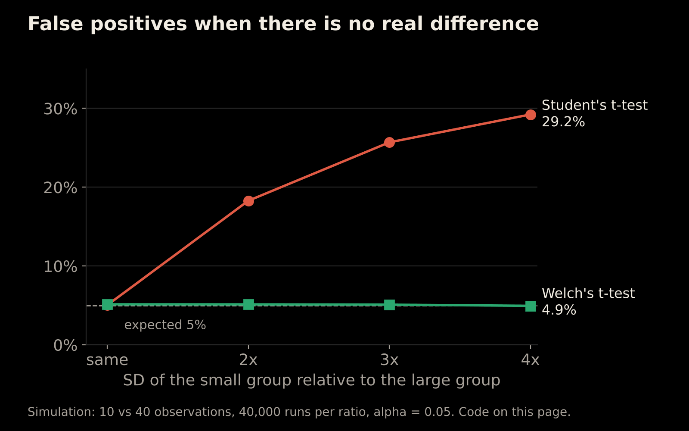
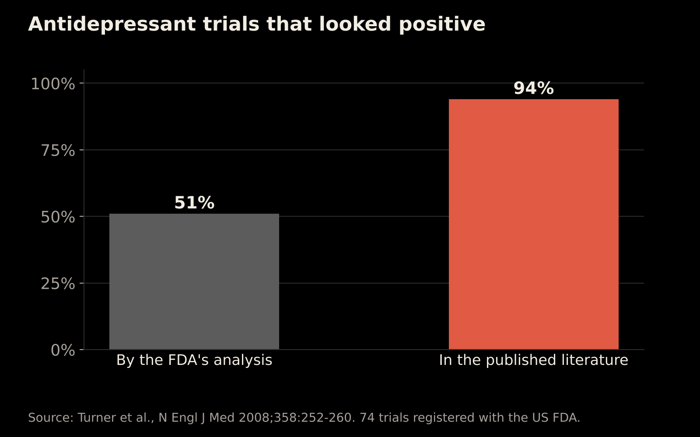
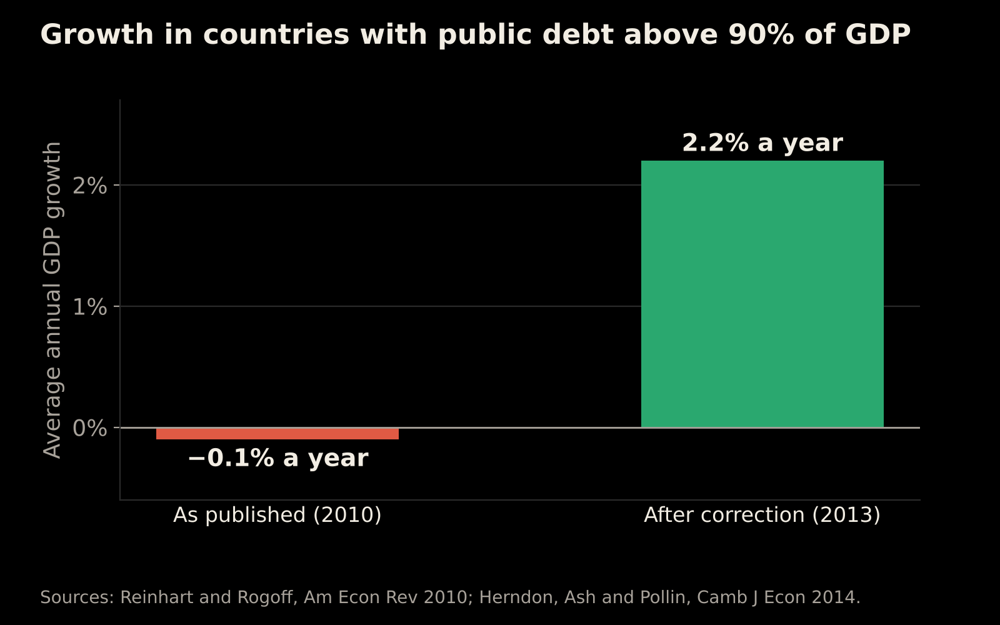
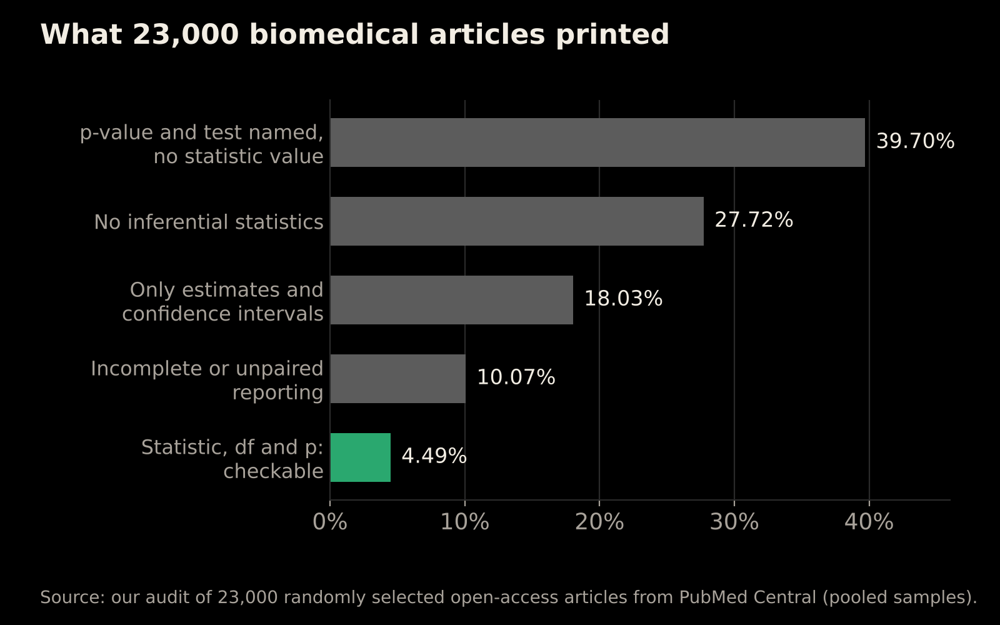

Most biomedical articles print no statistical result a reader can recompute
Companion page to our poster at ESTIC 2026, Bharat Mandapam, New Delhi, 27 to 29 October 2026. Poster session: 28 October, afternoon.
- 1 CSIR-Institute of Genomics and Integrative Biology, New Delhi 110025, India
- 2 Academy of Scientific and Innovative Research (AcSIR), Ghaziabad 201002, India
- * Corresponding authors
Thank you for scanning the code on our poster. This page tells each story on the poster in more detail, with the sources behind it, so you can check every claim yourself.
In one paragraph
Anyone can check a statistical test result if three numbers are printed together: the test statistic, its degrees of freedom and the p-value. We audited 23,000 randomly selected open-access biomedical articles from PubMed Central: a first sample of 3,000, then 20,000 more to check that the result held. Only 4.49% printed even one result with all three. We also built StickForStats, free software that checks a dataset before a test is run and records every analysis so it can be repeated.
Take-home message: Print the test statistic, its df and the exact p for every test, and let the reader judge significance.
1. Why statistics matters
Language models run on probabilities
When a language model writes, it doesn't look up an answer. At each step it gives every possible next word a probability and then samples one (Holtzman et al., 2020). A setting called temperature reshapes those probabilities. At a low temperature, the most likely word wins almost every time. At a high temperature, the choice spreads across more words. The top-left panel of our poster shows this for the sentence start "Statistics is the science of...". The numbers in that panel are illustrative, not taken from a real model. The point is that every sentence these systems produce is a draw from a probability distribution.
A trial that changed treatment
The RECOVERY trial randomly assigned 2,104 patients in hospital with COVID-19 to dexamethasone (6 mg a day for up to 10 days) and 4,321 to usual care (RECOVERY Collaborative Group, 2021). Within 28 days, 22.9% of the dexamethasone group had died, against 25.7% with usual care: an age-adjusted rate ratio of 0.83 (95% CI 0.75 to 0.93, P < 0.001).
The benefit depended on how ill patients were:

| Respiratory support at randomisation | Deaths: dexamethasone vs usual care | Rate ratio (95% CI) |
|---|---|---|
| Invasive mechanical ventilation | 29.3% vs 41.4% | 0.64 (0.51 to 0.81) |
| Oxygen only | 23.3% vs 26.2% | 0.82 (0.72 to 0.94) |
| No respiratory support | 17.8% vs 14.0% | 1.19 (0.91 to 1.55) |
The trial was large and randomised, and it reported its estimates with confidence intervals, so doctors could see who benefited and who didn't. Treatment guidelines changed quickly. That is what good statistics makes possible.
2. What a complete test result looks like
Suppose a paper reports: t(38) = 2.31, p = 0.026.
- The test statistic (t = 2.31) is the observed difference divided by its standard error: a ratio of signal to noise.
- The degrees of freedom (38) are set by the sample size and the test. For a two-sample t-test they are n₁ + n₂ − 2, so 38 means 40 participants in total, for example two groups of 20.
- The p-value (0.026) is the probability of a result at least this extreme if there were no real effect. It is not the probability that the result arose by chance, and it is not the probability that the hypothesis is true (Wasserstein and Lazar, 2016).
With the statistic and the degrees of freedom, anyone can recompute the p-value. For t = 2.31 on 38 degrees of freedom, the two-sided p-value is 0.0264, which matches the 0.026 printed. That is what "recompute" means on our poster.

When the three numbers disagree, something has gone wrong: a typo, a copying error or the wrong test. A tool called statcheck runs this check automatically on psychology papers. It found that about half of the papers it checked contained at least one p-value inconsistent with its test statistic and degrees of freedom, and one in eight contained an inconsistency that may have changed the statistical conclusion (Nuijten et al., 2016). In biomedicine, as our audit shows, most articles don't print all three numbers, so the check can't even begin.
3. When statistics goes wrong
Unequal spreads can manufacture false positives
Student's t-test assumes that both groups have the same spread. We simulated two groups with no true difference between them: 10 observations from a group with a larger standard deviation and 40 from a group with a smaller one, repeated 40,000 times at each ratio of standard deviations.

| How much larger the small group's SD is | Student's t-test: false positives | Welch's t-test: false positives |
|---|---|---|
| Same SD | 5.0% | 5.1% |
| 2 times | 18.3% | 5.1% |
| 3 times | 25.7% | 5.1% |
| 4 times | 29.2% | 4.9% |
With no real difference, a test at the 5% level should flag a "significant" result about 5% of the time. Student's test did so nearly six times as often. Welch's t-test, which doesn't assume equal spreads, stayed at about 5% throughout. The error also runs the other way: when the larger group has the larger spread, Student's test becomes too cautious and misses real effects (0.1% false positives in our simulation, against 5.1% for Welch). This is why many statisticians recommend Welch's test as the default (Ruxton, 2006; Delacre, Lakens and Leys, 2017), and why StickForStats checks the spread of the data before it chooses a test.
The simulation takes a few lines of Python. Running it with NumPy 2.5.3 and SciPy 1.18.1 reproduces the table exactly.
import numpy as np
from scipy import stats
rng = np.random.default_rng(2026)
reps = 40000
def false_positive_rates(sd_small, sd_large):
small = rng.normal(0, sd_small, (reps, 10)) # 10 observations
large = rng.normal(0, sd_large, (reps, 40)) # 40 observations
student = stats.ttest_ind(small, large, axis=1, equal_var=True).pvalue
welch = stats.ttest_ind(small, large, axis=1, equal_var=False).pvalue
return (student < 0.05).mean(), (welch < 0.05).mean()
for ratio in [1, 2, 3, 4]:
print("small group SD x", ratio, false_positive_rates(ratio, 1))
print("large group SD x 4", false_positive_rates(1, 4))Survivorship bias and the missing negative results
During the Second World War, the statistician Abraham Wald, working with the Statistical Research Group at Columbia University, studied the damage on aircraft that returned from missions (Mangel and Samaniego, 1984). The popular telling of the story, shown on our poster, makes his central point: the planes you can inspect are the ones that survived, so the places without bullet holes may be exactly where a hit was fatal.

Science has the same problem. Studies with positive results are more likely to be published, so the literature we read is a sample of survivors (Rosenthal, 1979). In one clear example, 51% of 74 antidepressant trials registered with the US Food and Drug Administration were positive according to the agency's analysis, but 94% of the published trials looked positive. Most of the negative trials were either never published or published in a way that made them look positive (Turner et al., 2008).

The Sally Clark case
In 1999, Sally Clark, a solicitor in England, was convicted of murdering her two baby sons, who had died suddenly in 1996 and 1998. A prosecution witness, the paediatrician Roy Meadow, told the jury that the chance of a death from sudden infant death syndrome (SIDS) in an affluent, non-smoking family like hers was 1 in 8,543. He squared that figure to say the chance of two such deaths was about 1 in 73 million (8,543 × 8,543 = 72,982,849).
The calculation contained two errors.
- It assumed the two deaths were independent. Multiplying probabilities is valid only if one event tells you nothing about the other. SIDS deaths cluster in families, through shared genetic and environmental factors, so after one SIDS death a second is far more likely than 1 in 8,543 (Hill, 2004).
- It invited the prosecutor's fallacy. Even a correct chance of two SIDS deaths is not the chance that the mother is innocent. Two infant murders in one family are also extremely rare. The question that matters is which explanation is more likely given that two babies died, and answering it means comparing both probabilities.
The Royal Statistical Society publicly criticised the use of the 1 in 73 million figure in 2001. Sally Clark's convictions were quashed on her second appeal in 2003 (R v Clark, 2003). A flawed probability calculation had helped convict her.
The Reinhart and Rogoff debt study
In 2010, the economists Carmen Reinhart and Kenneth Rogoff reported that countries with public debt above 90% of their GDP had average growth of −0.1% a year (Reinhart and Rogoff, 2010). The finding was cited widely in arguments for austerity.
In 2013, Thomas Herndon, then a graduate student, worked with Michael Ash and Robert Pollin to reproduce the result from the authors' own spreadsheet. They found three problems: a spreadsheet formula that left out several countries, the exclusion of years of data that were available, and an unusual weighting that gave a country with a single year above the threshold as much weight as one with many years. Corrected, average growth above the 90% threshold was 2.2% a year, not −0.1% (Herndon, Ash and Pollin, 2014). The error came to light only because the data and calculations could be checked.

4. Our audit: can a reader recompute the result?
We asked one question of each article: does it print at least one test result with all three numbers, meaning the test statistic, its degrees of freedom and the p-value?
We randomly selected 23,000 open-access biomedical articles from PubMed Central. We scored a first sample of 3,000 articles, then repeated the audit on 20,000 new ones, and the two samples agreed closely. The figures below pool both samples. How the scoring rules were set and checked will be described in full in our preprint.

| What the article printed | Share of articles |
|---|---|
| A p-value and the test named, but not the statistic's value | 39.70% |
| No inferential statistics | 27.72% |
| Only estimates and confidence intervals | 18.03% |
| Incomplete or unpaired statistical reporting | 10.07% |
| At least one result with the statistic, degrees of freedom and p-value | 4.49% |
So fewer than 1 in 20 articles let a reader recompute even one test result. Articles that report estimates with confidence intervals are doing something useful, and readers can check those in other ways. For tests, though, most of the literature asks readers to take the p-value on trust.
The full methods and results will be in our preprint, which we will link here as soon as it is posted.
5. StickForStats
StickForStats is a free, open-source statistics platform we built to help researchers get these details right from the start.
- It checks the data first. Before running a test, it looks at the shape and spread of the data and at outliers.
- Its Guardian system picks a suitable test. When an assumption fails, it switches to an alternative, for example Welch's t-test for unequal spreads or the Mann-Whitney U test for data that aren't normally distributed, and it tells you which test it used.
- It records every analysis, so the analysis can be rerun and checked.
- It reports results in full, with the test statistic, degrees of freedom and exact p-value.
Try it at stickforstats.com, now open to everyone as a public beta. The paper describing it is on bioRxiv (doi:10.64898/2026.06.15.732278) and is in review at BMC Bioinformatics.
6. Beyond p < 0.05
The 0.05 threshold is a convention, not a law of nature. Ronald Fisher, who popularised it, called it "convenient" (Fisher, 1925). Statisticians still disagree about what should replace it:
- some argue for reporting exact p-values together with effect sizes and confidence intervals, without declaring results "significant" or "not significant" (Wasserstein and Lazar, 2016; Wasserstein, Schirm and Lazar, 2019; Amrhein, Greenland and McShane, 2019);
- some for a stricter default threshold of 0.005 (Benjamin et al., 2018);
- some for choosing and justifying the threshold separately for each study (Lakens et al., 2018).
Bayesian methods offer another route (Kruschke, 2013). They combine the new data with prior knowledge. That prior should come from earlier evidence and be set before the new data are seen, together with a check of how much the conclusion depends on it.
Our position is simple. Whatever framework you use, print the test statistic, its degrees of freedom, the exact p-value, the effect size and its confidence interval, and let the reader judge.
Take-home message: Print the test statistic, its df and the exact p for every test, and let the reader judge significance.
How to cite this poster
Bharti V, Chakraborty D. Most biomedical articles print no statistical result a reader can recompute. Poster presented at ESTIC 2026, New Delhi, 28 October 2026.
References
- Amrhein V, Greenland S, McShane B. Scientists rise up against statistical significance. Nature. 2019;567:305-307. doi:10.1038/d41586-019-00857-9
- Benjamin DJ, Berger JO, Johannesson M, et al. Redefine statistical significance. Nature Human Behaviour. 2018;2:6-10. doi:10.1038/s41562-017-0189-z
- Delacre M, Lakens D, Leys C. Why psychologists should by default use Welch's t-test instead of Student's t-test. International Review of Social Psychology. 2017;30(1):92-101. doi:10.5334/irsp.82
- Fisher RA. Statistical Methods for Research Workers. Edinburgh: Oliver and Boyd; 1925.
- Herndon T, Ash M, Pollin R. Does high public debt consistently stifle economic growth? A critique of Reinhart and Rogoff. Cambridge Journal of Economics. 2014;38(2):257-279. doi:10.1093/cje/bet075
- Hill R. Multiple sudden infant deaths: coincidence or beyond coincidence? Paediatric and Perinatal Epidemiology. 2004;18(5):320-326. doi:10.1111/j.1365-3016.2004.00560.x
- Holtzman A, Buys J, Du L, Forbes M, Choi Y. The curious case of neural text degeneration. International Conference on Learning Representations. 2020. arXiv:1904.09751
- Kruschke JK. Bayesian estimation supersedes the t test. Journal of Experimental Psychology: General. 2013;142(2):573-603. doi:10.1037/a0029146
- Lakens D, Adolfi FG, Albers CJ, et al. Justify your alpha. Nature Human Behaviour. 2018;2:168-171. doi:10.1038/s41562-018-0311-x
- Mangel M, Samaniego FJ. Abraham Wald's work on aircraft survivability. Journal of the American Statistical Association. 1984;79(386):259-267. doi:10.1080/01621459.1984.10478038
- Nuijten MB, Hartgerink CHJ, van Assen MALM, Epskamp S, Wicherts JM. The prevalence of statistical reporting errors in psychology (1985-2013). Behavior Research Methods. 2016;48(4):1205-1226. doi:10.3758/s13428-015-0664-2
- R v Clark [2003] EWCA Crim 1020 (Court of Appeal of England and Wales).
- RECOVERY Collaborative Group. Dexamethasone in hospitalized patients with Covid-19. New England Journal of Medicine. 2021;384(8):693-704. doi:10.1056/NEJMoa2021436
- Reinhart CM, Rogoff KS. Growth in a time of debt. American Economic Review. 2010;100(2):573-578. doi:10.1257/aer.100.2.573
- Rosenthal R. The file drawer problem and tolerance for null results. Psychological Bulletin. 1979;86(3):638-641. doi:10.1037/0033-2909.86.3.638
- Ruxton GD. The unequal variance t-test is an underused alternative to Student's t-test and the Mann-Whitney U test. Behavioral Ecology. 2006;17(4):688-690. doi:10.1093/beheco/ark016
- Turner EH, Matthews AM, Linardatos E, Tell RA, Rosenthal R. Selective publication of antidepressant trials and its influence on apparent efficacy. New England Journal of Medicine. 2008;358(3):252-260. doi:10.1056/NEJMsa065779
- Wasserstein RL, Lazar NA. The ASA statement on p-values: context, process, and purpose. The American Statistician. 2016;70(2):129-133. doi:10.1080/00031305.2016.1154108
- Wasserstein RL, Schirm AL, Lazar NA. Moving to a world beyond "p < 0.05". The American Statistician. 2019;73(sup1):1-19. doi:10.1080/00031305.2019.1583913
Last updated: October 2026.